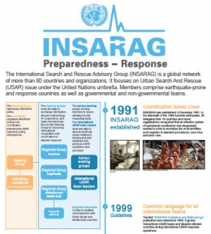

国際捜索救助諮問グループ(INSARAG)
国際捜索救助諮問グループ（International Search and Rescue Advisory Group : INSARAG）は、都市型捜索・救助（urban search and rescue : USAR）とこうした活動の現場での調整に取り組む災害多発国と災害に対応する国や組織から構成されたネットワークです。
1988年のアルメニア地震に対応した国際捜索・救助チームがイニシアチブを取って、INSARAGは1991年に設立されました。国際的な参加や調整を容易にするため、INSARAG事務局が国連に設置されました。OCHAジュネーブにある本部の緊急サービス部（Emergency Services Branch :ESB)に所属するフィールド調整支援課（Field Coordination Support Section：FCSS）がINSARAGとして機能しています。
任務
INSARAGの活動は、「国際捜索救助活動の効果と調整機能強化」に関する国連総会決議第57/150号（2002年12月16日付）に基づいています。また、同活動は2010年神戸で開催された第１回INSARAGグローバル会合にて採択されたINSARAG兵庫宣言にも従って進められています。
INSARAGの任務は以下の通りです：
・より効果的な緊急事態への備えと対応を可能にし、これによってより多くの命を救い、被害を軽減し、また悪影響を最小限に抑える。
・災害現場の倒壊した建物で作業にあたる国際都市型捜索・救助チーム間の効率的な協力を促進する。
・災害多発国（途上国を優先）において捜索救助能力向上を図る活動を促進する。
・国際的に受け入れられる手順とシステムを開発し、各国都市型捜索・救助チームによる持続的協調を図る。
・都市型捜索・救助の手順、ガイドライン及び成功事例を発展させ、緊急救援段階における関係組織間の協力を強化する。
INSARAG外部評価分類（IEC）
INSARAGコミュニティは、建物倒壊時に熟練した都市型捜索・救助サポートを迅速に提供することを重視しています。この目的を達成するため、INSARAGはIEC（INSARAG External Classification）という国際都市型捜索・救助チームによる自発的で独立した相互評価プロセスを開発しました。INSARAG運営グループは、2005年にIECを承認し、IECはINSARAGメンバーからの全面的な支持を得ています。各チームの活動遂行能力に準じて、国際的に展開される都市型捜索・救助チームは、IECプロセスによって「中級（ミディアム）」、「重量（ヘビー）」級と分類されます。これによって、資格に相応しい都市捜索・救助チームが適切に配置されます。
2005年から2010年にかけて、21の国際チームがIEC資格を取得しました。国際都市型捜索・救助チームはINSARAG事務局を通じてIECへ申請することができます。
INSARAGに加盟するためには
都市捜索・救助に関連する政府や組織は、INSARAGネットワークへの参加が求められます。本ネットワークに参加を希望する国は、INSARAG地域グループやINSARAG事務局との連絡窓口を設けるよう求められます。INSARAG加盟申請を希望する組織は、各国のINSARAG窓口を通じて、INSARAG事務局宛に申請できます。
国際的に活動する都市型捜索・救助チームを有するINSARAG加盟国は、IECへ申請することが強く推奨されますが、IEC取得はINSARAGネットワークのメンバーになることの必須条件ではありません。
INSARAGに加盟する意味
INSARAGメンバーは、倒壊した建物での救助と現場活動の調整に関する世界的な知識共有ネットワークを構成します。メンバーはINSARAG地域グループの年次会合及びINSARAG作業部会への参加を求められます。さらに、インターネット上で、INSARAGの情報・知識を共有するツールである『バーチャルオソック（Virtual OSOCC）』（OSOCC：現地活動調整センター）とグローバル災害警報・調整システム（GDACS ジーダックス）を活用できます。OSOCCとGDACSというシステムを用いて、突発災害の警報通知、ならびに災害下でのリアルタイムな情報更新及び調整を行います。
INSARAGメンバーの責務
国連総会決議第57/150号（2002年12月16日付）とINSARAGガイドラインに基づき、
被災国では：
・できるだけ早く被害状況とニーズのアセスメントを行う。
・国際支援を要請する際、必要となる支援の性質を特定し、優先順位付けを行う。
・国際救援チームの入国手続きを円滑に行う。
・国際救援活動を調整するため、固有の役割を与えられた政府機関を指定する。
・バーチャルオソック上で迅速に情報を更新し各種要請を掲載する。
・災害対応に国際社会から投入されるリソースの一本化を図るため、受入出発センター（RDC）と現地活動調整センターを活用する。
「支援国」には以下の事柄が求められます：
・INSARAGガイドラインに準拠する都市型捜索・救助チームのみを展開すること。
・現場において受入出発センターや現地活動調整センターと協調、またその機能を強化することの出来る能力を備えた都市型捜索・救助チームを持つこと。
・それぞれの活動について、バーチャルオソックに最新の情報を提供すること。
「国際都市型捜索救助チームの活動調整の標準化について： INSARAGマーキングとアセスメントフォームを例に」地域安全学会論文集No.26 （日本語）＞＞